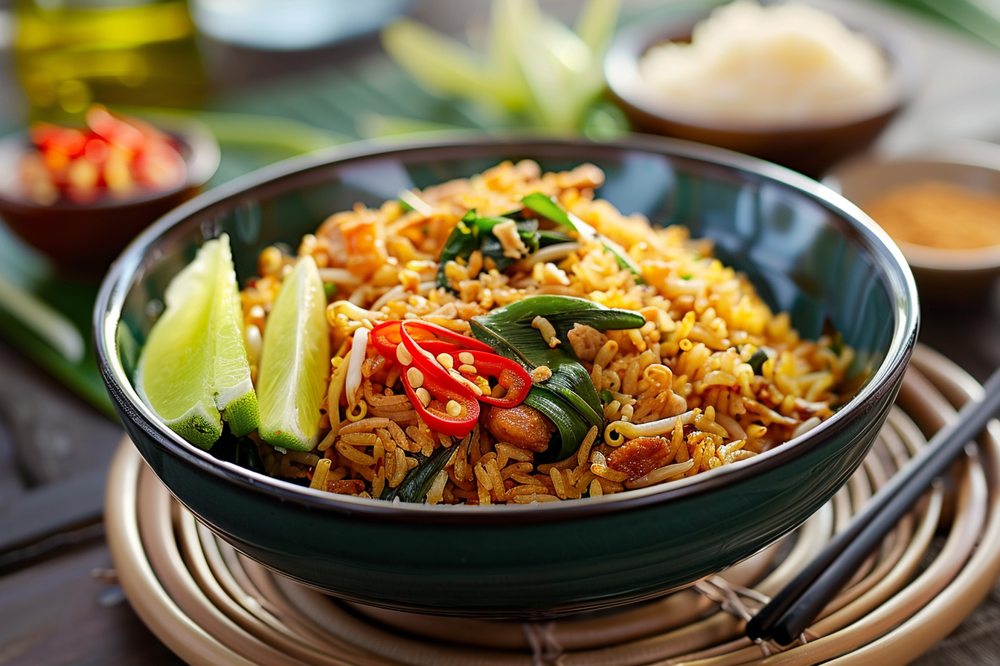

Vegan Nasi

Description
Ingredients
- 1 leek
- 1 Onion
- 1 Bell pepper
- 2 Carrots
- 1 Bokchoy
- 400 gr white rice
- 3 garlic cloves
- a thumb of ginger
- a thumb of galangal
- curcuma
- coriander
- black pepper
Steps
- cook the rice
- Chop all vegetables. Add the chopped onion to a large wok. Saute until soft, grind the garlic, ginger galangal and add to the wok together with the other spices.
- Add the other vegetables and saute until soft. Add the rice, bake until lightly colored and serve.